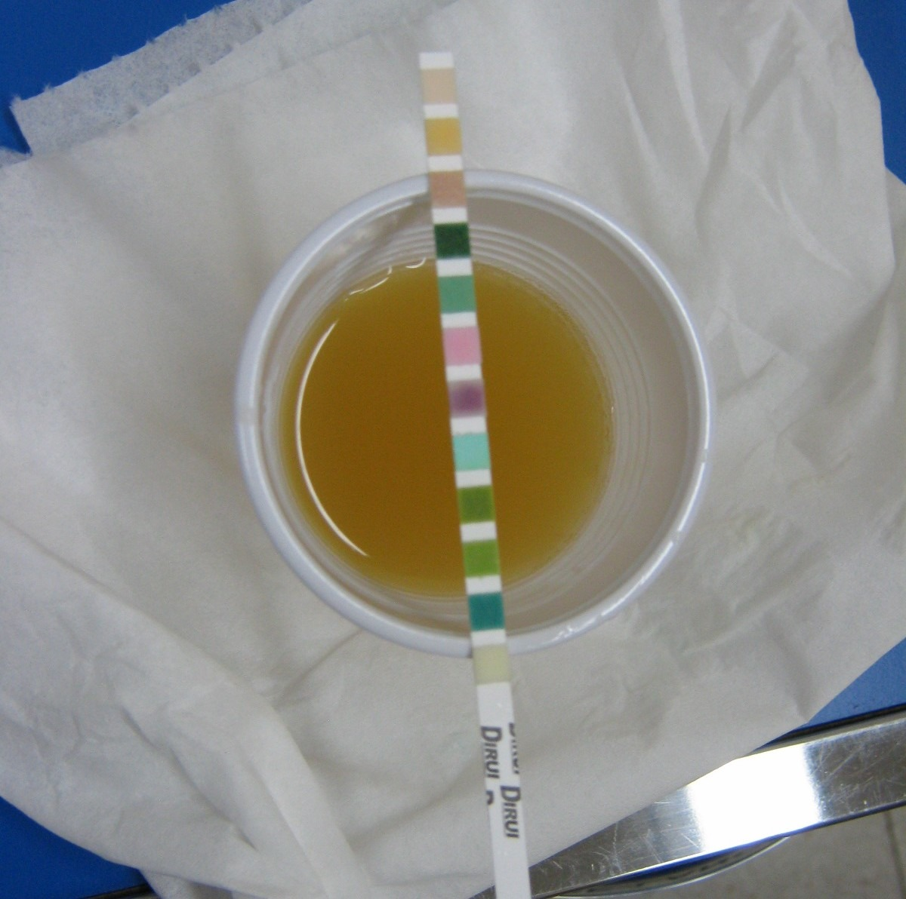
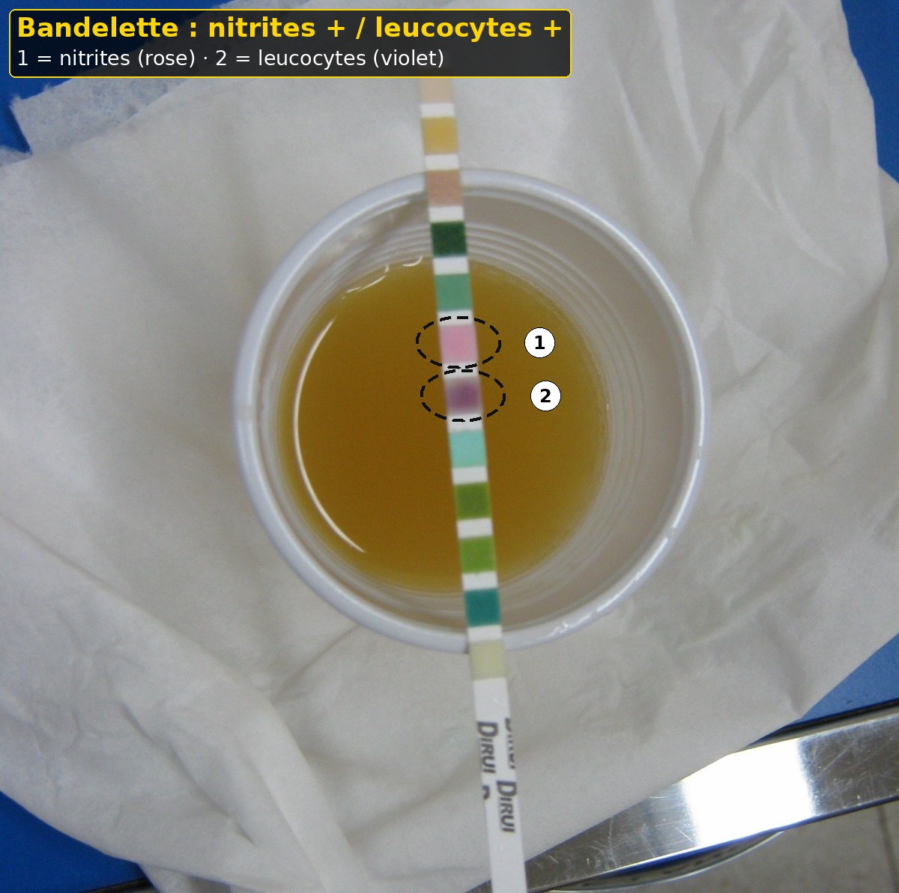
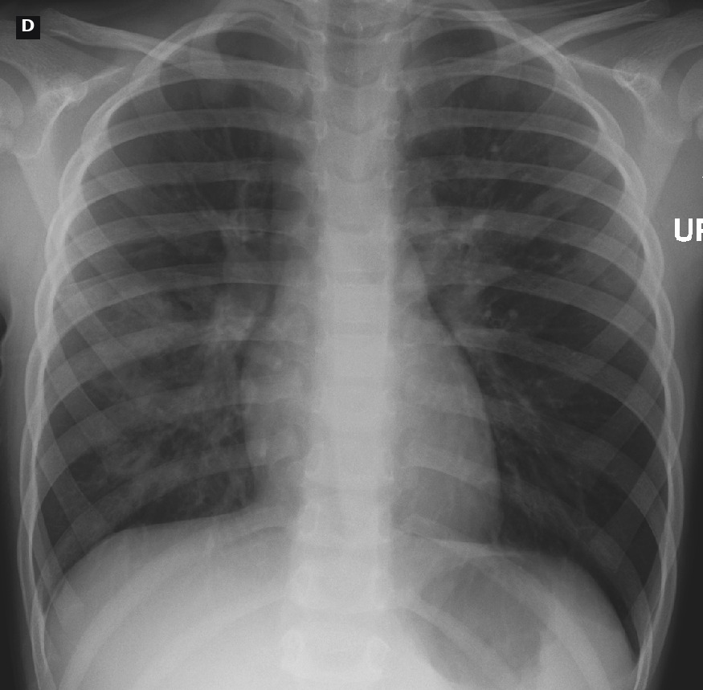
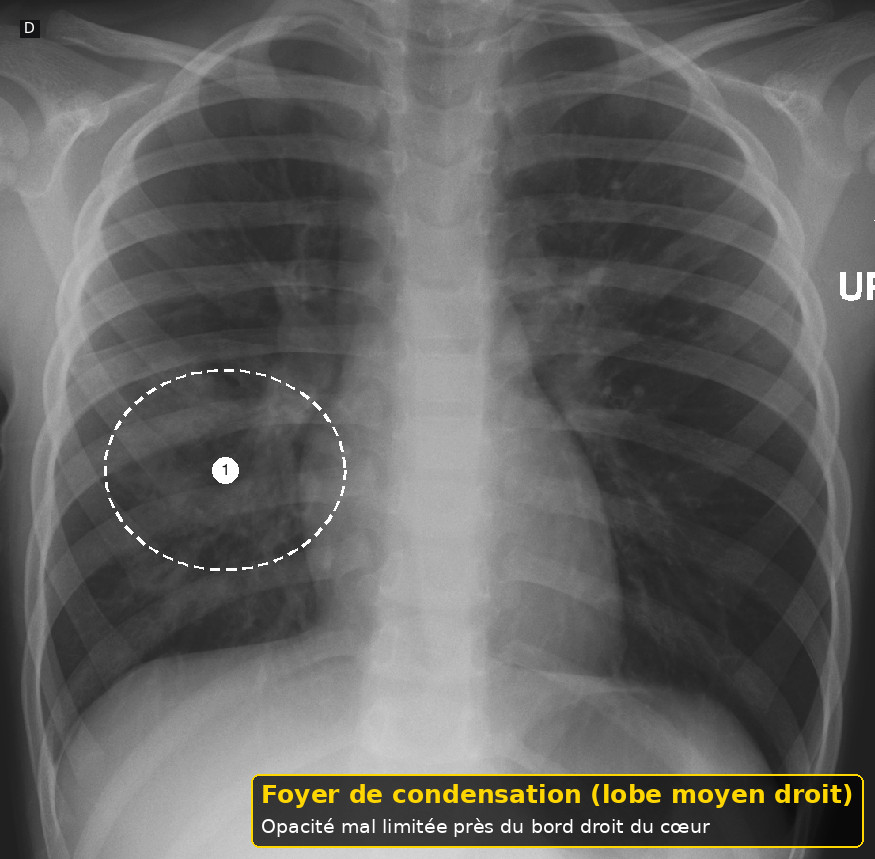

Infection aiguë du nourrisson
Taille : mesurée par le script du dépôt.
L'essentiel
Infection aiguë du nourrisson : les critères, les signes d'alarme et les doses lues sont dans les fenêtres.
1. Définition
Le détail est dans la fenêtre.
L'infection aiguë du nourrisson qui pleure va de l'otite et de l'infection urinaire jusqu'au sepsis et à la méningite.3
Le cri change, souvent avec fièvre, tonus moindre ou refus de boire.3
Ce n'est pas un trouble fonctionnel.3
La brochure genevoise demande les urgences si l'enfant est gris, mou, ou inconsolable même dans les bras.3
On commence les gestes vitaux sans attendre le germe.3
À l'arrivée, pour Infection aiguë du nourrisson, on évalue le tonus et la couleur en premier.
À l'arrivée, pour Infection aiguë du nourrisson, on ne dépasse pas 30 mg par kilogramme et par jour d'ibuprofène.
À l'arrivée, pour Infection aiguë du nourrisson, on écrit l'heure de la première dose.
Après le déshabillage, pour Infection aiguë du nourrisson, on ne le donne pas sous 5 kg.
Après le déshabillage, pour Infection aiguë du nourrisson, on groupe le sang si l'enfant est toxique.
Avant l'ordonnance, pour Infection aiguë du nourrisson, on limite à 3 jours sans avis chez l'enfant.
Avant l'ordonnance, pour Infection aiguë du nourrisson, on explique les signes de retour du soir.
Si le cri persiste, pour Infection aiguë du nourrisson, on respecte 6 à 8 heures.
Si le cri persiste, pour Infection aiguë du nourrisson, on prélève sans retarder l'antibiotique d'un choc.
Avant le retour à domicile, pour Infection aiguë du nourrisson, on ne renvoie pas un nourrisson fébrile sans consigne horaire.
Avant le retour à domicile, pour Infection aiguë du nourrisson, on ne traite pas un ictère néonatal par ceftriaxone.
Quand la famille rappelle, pour Infection aiguë du nourrisson, on palpe la fontanelle.
Quand la famille rappelle, pour Infection aiguë du nourrisson, on ne mélange pas le calcium intraveineux et Rocephin à 28 jours ou moins.
Dans le compte rendu, pour Infection aiguë du nourrisson, on regarde les tympans.
Dans le compte rendu, pour Infection aiguë du nourrisson, on plafonne le nouveau-né de moins de 15 jours à 50 mg par kilogramme.
Si un signe nouveau apparaît, pour Infection aiguë du nourrisson, on évalue le tonus et la couleur en premier.
Si un signe nouveau apparaît, pour Infection aiguë du nourrisson, on ne dépasse pas 30 mg par kilogramme et par jour d'ibuprofène.
Si un signe nouveau apparaît, pour Infection aiguë du nourrisson, on écrit l'heure de la première dose.
À la visite de contrôle, pour Infection aiguë du nourrisson, on ne le donne pas sous 5 kg.
À la visite de contrôle, pour Infection aiguë du nourrisson, on groupe le sang si l'enfant est toxique.
Devant les deux parents, pour Infection aiguë du nourrisson, on limite à 3 jours sans avis chez l'enfant.
Devant les deux parents, pour Infection aiguë du nourrisson, on explique les signes de retour du soir.
Au moment de la pesée, pour Infection aiguë du nourrisson, on respecte 6 à 8 heures.
Au moment de la pesée, pour Infection aiguë du nourrisson, on prélève sans retarder l'antibiotique d'un choc.
2. Épidémiologie
Le détail est dans la fenêtre.
La fièvre est un motif très fréquent. La méningite est rare et grave.5
On ne donne pas un taux suisse de méningite qui n'est pas archivé.5
L'infection urinaire du nourrisson fébrile sans foyer se cherche par les urines, pas par le seul cri.5
L'otite se confirme à l'otoscope, pas parce que l'enfant porte la main à l'oreille.5
Le texte de 2018 cite la dysurie comme indice urinaire chez le petit enfant.5
À l'arrivée, pour Infection aiguë du nourrisson, on compte la recoloration cutanée.
À l'arrivée, pour Infection aiguë du nourrisson, on réserve 100 mg par kilogramme de ceftriaxone à l'enfant en bas âge et à l'enfant.
À l'arrivée, pour Infection aiguë du nourrisson, on distingue foyer trouvé et foyer absent.
Après le déshabillage, pour Infection aiguë du nourrisson, on l'évite si la varicelle est là.
Après le déshabillage, pour Infection aiguë du nourrisson, on oxygène si la saturation ou la couleur l'exigent.
Avant l'ordonnance, pour Infection aiguë du nourrisson, on ne donne pas Algifor Dolo Junior avant 6 mois.
Avant l'ordonnance, pour Infection aiguë du nourrisson, on ne masque pas une méningite par un seul antipyrétique.
Si le cri persiste, pour Infection aiguë du nourrisson, on ne dépasse pas 75 mg par kilogramme sur la journée.
Si le cri persiste, pour Infection aiguë du nourrisson, on relit les autres sirops avant d'ajouter une dose.
Avant le retour à domicile, pour Infection aiguë du nourrisson, on donne 15 mg par kilogramme seulement selon l'autorisation 43838.
Avant le retour à domicile, pour Infection aiguë du nourrisson, on appelle le senior si l'enfant devient mou.
Quand la famille rappelle, pour Infection aiguë du nourrisson, on demande les urines si aucun foyer n'est vu.
Quand la famille rappelle, pour Infection aiguë du nourrisson, on vérifie l'âge post-menstruel du prématuré.
Dans le compte rendu, pour Infection aiguë du nourrisson, on cherche un purpura.
Dans le compte rendu, pour Infection aiguë du nourrisson, on perfuse le nouveau-né sur 60 minutes.
Si un signe nouveau apparaît, pour Infection aiguë du nourrisson, on compte la recoloration cutanée.
Si un signe nouveau apparaît, pour Infection aiguë du nourrisson, on réserve 100 mg par kilogramme de ceftriaxone à l'enfant en bas âge et à l'enfant.
Si un signe nouveau apparaît, pour Infection aiguë du nourrisson, on distingue foyer trouvé et foyer absent.
À la visite de contrôle, pour Infection aiguë du nourrisson, on l'évite si la varicelle est là.
À la visite de contrôle, pour Infection aiguë du nourrisson, on oxygène si la saturation ou la couleur l'exigent.
Devant les deux parents, pour Infection aiguë du nourrisson, on ne donne pas Algifor Dolo Junior avant 6 mois.
Devant les deux parents, pour Infection aiguë du nourrisson, on ne masque pas une méningite par un seul antipyrétique.
Au moment de la pesée, pour Infection aiguë du nourrisson, on ne dépasse pas 75 mg par kilogramme sur la journée.
Au moment de la pesée, pour Infection aiguë du nourrisson, on relit les autres sirops avant d'ajouter une dose.
3. Physiopathologie
Le détail est dans la fenêtre.
Une bactérie ou un virus déclenche inflammation, douleur et parfois choc.5
La méningite irrite les méninges et peut bomber la fontanelle.5
Le sepsis désadapte le tonus, la couleur et la perfusion.5
Une infection urinaire haute peut ne donner que fièvre et irritabilité.5
On ne réduit pas ces mécanismes à une colique parce que l'horaire est le soir.5
À l'arrivée, pour Infection aiguë du nourrisson, on regarde les tympans.
À l'arrivée, pour Infection aiguë du nourrisson, on plafonne le nouveau-né de moins de 15 jours à 50 mg par kilogramme.
Après le déshabillage, pour Infection aiguë du nourrisson, on évalue le tonus et la couleur en premier.
Après le déshabillage, pour Infection aiguë du nourrisson, on ne dépasse pas 30 mg par kilogramme et par jour d'ibuprofène.
Après le déshabillage, pour Infection aiguë du nourrisson, on écrit l'heure de la première dose.
Avant l'ordonnance, pour Infection aiguë du nourrisson, on ne le donne pas sous 5 kg.
Avant l'ordonnance, pour Infection aiguë du nourrisson, on groupe le sang si l'enfant est toxique.
Si le cri persiste, pour Infection aiguë du nourrisson, on limite à 3 jours sans avis chez l'enfant.
Si le cri persiste, pour Infection aiguë du nourrisson, on explique les signes de retour du soir.
Avant le retour à domicile, pour Infection aiguë du nourrisson, on respecte 6 à 8 heures.
Avant le retour à domicile, pour Infection aiguë du nourrisson, on prélève sans retarder l'antibiotique d'un choc.
Quand la famille rappelle, pour Infection aiguë du nourrisson, on ne renvoie pas un nourrisson fébrile sans consigne horaire.
Quand la famille rappelle, pour Infection aiguë du nourrisson, on ne traite pas un ictère néonatal par ceftriaxone.
Dans le compte rendu, pour Infection aiguë du nourrisson, on palpe la fontanelle.
Dans le compte rendu, pour Infection aiguë du nourrisson, on ne mélange pas le calcium intraveineux et Rocephin à 28 jours ou moins.
Si un signe nouveau apparaît, pour Infection aiguë du nourrisson, on regarde les tympans.
Si un signe nouveau apparaît, pour Infection aiguë du nourrisson, on plafonne le nouveau-né de moins de 15 jours à 50 mg par kilogramme.
À la visite de contrôle, pour Infection aiguë du nourrisson, on évalue le tonus et la couleur en premier.
À la visite de contrôle, pour Infection aiguë du nourrisson, on ne dépasse pas 30 mg par kilogramme et par jour d'ibuprofène.
À la visite de contrôle, pour Infection aiguë du nourrisson, on écrit l'heure de la première dose.
Devant les deux parents, pour Infection aiguë du nourrisson, on ne le donne pas sous 5 kg.
Devant les deux parents, pour Infection aiguë du nourrisson, on groupe le sang si l'enfant est toxique.
Au moment de la pesée, pour Infection aiguë du nourrisson, on limite à 3 jours sans avis chez l'enfant.
Au moment de la pesée, pour Infection aiguë du nourrisson, on explique les signes de retour du soir.
4. Démarche diagnostique
Le détail est dans la fenêtre.
On note l'heure de début, le pic fébrile, les contacts, les vomissements et la quantité bue.3
On évalue couleur, temps de recoloration, fréquence respiratoire et conscience.3
Un enfant toxique est vu tout de suite par le senior et réanimé.3
Un enfant fébrile mais tonique a un examen de foyer complet.3
On ne renvoie pas un nourrisson fébrile sans projet de surveillance.3
À l'arrivée, pour Infection aiguë du nourrisson, on cherche un purpura.
À l'arrivée, pour Infection aiguë du nourrisson, on perfuse le nouveau-né sur 60 minutes.
Après le déshabillage, pour Infection aiguë du nourrisson, on compte la recoloration cutanée.
Après le déshabillage, pour Infection aiguë du nourrisson, on réserve 100 mg par kilogramme de ceftriaxone à l'enfant en bas âge et à l'enfant.
Après le déshabillage, pour Infection aiguë du nourrisson, on distingue foyer trouvé et foyer absent.
Avant l'ordonnance, pour Infection aiguë du nourrisson, on l'évite si la varicelle est là.
Avant l'ordonnance, pour Infection aiguë du nourrisson, on oxygène si la saturation ou la couleur l'exigent.
Si le cri persiste, pour Infection aiguë du nourrisson, on ne donne pas Algifor Dolo Junior avant 6 mois.
Si le cri persiste, pour Infection aiguë du nourrisson, on ne masque pas une méningite par un seul antipyrétique.
Avant le retour à domicile, pour Infection aiguë du nourrisson, on ne dépasse pas 75 mg par kilogramme sur la journée.
Avant le retour à domicile, pour Infection aiguë du nourrisson, on relit les autres sirops avant d'ajouter une dose.
Quand la famille rappelle, pour Infection aiguë du nourrisson, on donne 15 mg par kilogramme seulement selon l'autorisation 43838.
Quand la famille rappelle, pour Infection aiguë du nourrisson, on appelle le senior si l'enfant devient mou.
Dans le compte rendu, pour Infection aiguë du nourrisson, on demande les urines si aucun foyer n'est vu.
Dans le compte rendu, pour Infection aiguë du nourrisson, on vérifie l'âge post-menstruel du prématuré.
Si un signe nouveau apparaît, pour Infection aiguë du nourrisson, on cherche un purpura.
Si un signe nouveau apparaît, pour Infection aiguë du nourrisson, on perfuse le nouveau-né sur 60 minutes.
À la visite de contrôle, pour Infection aiguë du nourrisson, on compte la recoloration cutanée.
À la visite de contrôle, pour Infection aiguë du nourrisson, on réserve 100 mg par kilogramme de ceftriaxone à l'enfant en bas âge et à l'enfant.
À la visite de contrôle, pour Infection aiguë du nourrisson, on distingue foyer trouvé et foyer absent.
Devant les deux parents, pour Infection aiguë du nourrisson, on l'évite si la varicelle est là.
Devant les deux parents, pour Infection aiguë du nourrisson, on oxygène si la saturation ou la couleur l'exigent.
Au moment de la pesée, pour Infection aiguë du nourrisson, on ne donne pas Algifor Dolo Junior avant 6 mois.
Au moment de la pesée, pour Infection aiguë du nourrisson, on ne masque pas une méningite par un seul antipyrétique.
5. Anamnèse et drapeaux rouges
Le détail est dans la fenêtre.
Teint gris, lèvres bleues, enfant mou, cri faible, hurlement au toucher : urgence lue dans la brochure genevoise.3
Fontanelle bombée, convulsion, taches qui ne blanchissent pas : on ne cherche pas une colique.3
Une fièvre chez un nouveau-né de quelques jours n'est pas un motif de conseil téléphonique.3
Un refus total de boire avec peu d'urines fait craindre la déshydratation.3
La brochure cite plus de 8 heures sans urine parmi les signes de retour urgent en cas de pertes.3
À l'arrivée, pour Infection aiguë du nourrisson, on palpe la fontanelle.
À l'arrivée, pour Infection aiguë du nourrisson, on ne mélange pas le calcium intraveineux et Rocephin à 28 jours ou moins.
Après le déshabillage, pour Infection aiguë du nourrisson, on regarde les tympans.
Après le déshabillage, pour Infection aiguë du nourrisson, on plafonne le nouveau-né de moins de 15 jours à 50 mg par kilogramme.
Avant l'ordonnance, pour Infection aiguë du nourrisson, on évalue le tonus et la couleur en premier.
Avant l'ordonnance, pour Infection aiguë du nourrisson, on ne dépasse pas 30 mg par kilogramme et par jour d'ibuprofène.
Avant l'ordonnance, pour Infection aiguë du nourrisson, on écrit l'heure de la première dose.
Si le cri persiste, pour Infection aiguë du nourrisson, on ne le donne pas sous 5 kg.
Si le cri persiste, pour Infection aiguë du nourrisson, on groupe le sang si l'enfant est toxique.
Avant le retour à domicile, pour Infection aiguë du nourrisson, on limite à 3 jours sans avis chez l'enfant.
Avant le retour à domicile, pour Infection aiguë du nourrisson, on explique les signes de retour du soir.
Quand la famille rappelle, pour Infection aiguë du nourrisson, on respecte 6 à 8 heures.
Quand la famille rappelle, pour Infection aiguë du nourrisson, on prélève sans retarder l'antibiotique d'un choc.
Dans le compte rendu, pour Infection aiguë du nourrisson, on ne renvoie pas un nourrisson fébrile sans consigne horaire.
Dans le compte rendu, pour Infection aiguë du nourrisson, on ne traite pas un ictère néonatal par ceftriaxone.
Si un signe nouveau apparaît, pour Infection aiguë du nourrisson, on palpe la fontanelle.
Si un signe nouveau apparaît, pour Infection aiguë du nourrisson, on ne mélange pas le calcium intraveineux et Rocephin à 28 jours ou moins.
À la visite de contrôle, pour Infection aiguë du nourrisson, on regarde les tympans.
À la visite de contrôle, pour Infection aiguë du nourrisson, on plafonne le nouveau-né de moins de 15 jours à 50 mg par kilogramme.
Devant les deux parents, pour Infection aiguë du nourrisson, on évalue le tonus et la couleur en premier.
Devant les deux parents, pour Infection aiguë du nourrisson, on ne dépasse pas 30 mg par kilogramme et par jour d'ibuprofène.
Devant les deux parents, pour Infection aiguë du nourrisson, on écrit l'heure de la première dose.
Au moment de la pesée, pour Infection aiguë du nourrisson, on ne le donne pas sous 5 kg.
Au moment de la pesée, pour Infection aiguë du nourrisson, on groupe le sang si l'enfant est toxique.
6. Examen physique
Le détail est dans la fenêtre.
On regarde le tympan, la gorge, la fontanelle, le souffle, le ventre, les hanches et la peau.3
Une éruption purpurique se cherche sur tout le corps, y compris les plantes.3
On compte les secondes de recoloration cutanée.3
On déshabille, car une ecchymose peut coexister avec une fièvre.3
Un abdomen aigu fébrile peut être chirurgical et infectieux.3
À l'arrivée, pour Infection aiguë du nourrisson, on demande les urines si aucun foyer n'est vu.
À l'arrivée, pour Infection aiguë du nourrisson, on vérifie l'âge post-menstruel du prématuré.
Après le déshabillage, pour Infection aiguë du nourrisson, on cherche un purpura.
Après le déshabillage, pour Infection aiguë du nourrisson, on perfuse le nouveau-né sur 60 minutes.
Avant l'ordonnance, pour Infection aiguë du nourrisson, on compte la recoloration cutanée.
Avant l'ordonnance, pour Infection aiguë du nourrisson, on réserve 100 mg par kilogramme de ceftriaxone à l'enfant en bas âge et à l'enfant.
Avant l'ordonnance, pour Infection aiguë du nourrisson, on distingue foyer trouvé et foyer absent.
Si le cri persiste, pour Infection aiguë du nourrisson, on l'évite si la varicelle est là.
Si le cri persiste, pour Infection aiguë du nourrisson, on oxygène si la saturation ou la couleur l'exigent.
Avant le retour à domicile, pour Infection aiguë du nourrisson, on ne donne pas Algifor Dolo Junior avant 6 mois.
Avant le retour à domicile, pour Infection aiguë du nourrisson, on ne masque pas une méningite par un seul antipyrétique.
Quand la famille rappelle, pour Infection aiguë du nourrisson, on ne dépasse pas 75 mg par kilogramme sur la journée.
Quand la famille rappelle, pour Infection aiguë du nourrisson, on relit les autres sirops avant d'ajouter une dose.
Dans le compte rendu, pour Infection aiguë du nourrisson, on donne 15 mg par kilogramme seulement selon l'autorisation 43838.
Dans le compte rendu, pour Infection aiguë du nourrisson, on appelle le senior si l'enfant devient mou.
Si un signe nouveau apparaît, pour Infection aiguë du nourrisson, on demande les urines si aucun foyer n'est vu.
Si un signe nouveau apparaît, pour Infection aiguë du nourrisson, on vérifie l'âge post-menstruel du prématuré.
À la visite de contrôle, pour Infection aiguë du nourrisson, on cherche un purpura.
À la visite de contrôle, pour Infection aiguë du nourrisson, on perfuse le nouveau-né sur 60 minutes.
Devant les deux parents, pour Infection aiguë du nourrisson, on compte la recoloration cutanée.
Devant les deux parents, pour Infection aiguë du nourrisson, on réserve 100 mg par kilogramme de ceftriaxone à l'enfant en bas âge et à l'enfant.
Devant les deux parents, pour Infection aiguë du nourrisson, on distingue foyer trouvé et foyer absent.
Au moment de la pesée, pour Infection aiguë du nourrisson, on l'évite si la varicelle est là.
Au moment de la pesée, pour Infection aiguë du nourrisson, on oxygène si la saturation ou la couleur l'exigent.
7. Approche syndromique
Le détail est dans la fenêtre.
Fièvre plus tympan bombé et opaque : otite jusqu'à preuve d'un autre foyer.3
Fièvre sans foyer chez le petit nourrisson : urines et réévaluation.3
Fièvre plus fontanelle bombée ou trouble de conscience : méningite jusqu'à preuve du contraire.3
Fièvre plus cri et ecchymose : on ne choisit pas entre infection et maltraitance, on tient les deux.3
Cri sans fièvre et examen normal : on revient aux autres diagnostics de ce LOT.3
À l'arrivée, pour Infection aiguë du nourrisson, on ne renvoie pas un nourrisson fébrile sans consigne horaire.
À l'arrivée, pour Infection aiguë du nourrisson, on ne traite pas un ictère néonatal par ceftriaxone.
Après le déshabillage, pour Infection aiguë du nourrisson, on palpe la fontanelle.
Après le déshabillage, pour Infection aiguë du nourrisson, on ne mélange pas le calcium intraveineux et Rocephin à 28 jours ou moins.
Avant l'ordonnance, pour Infection aiguë du nourrisson, on regarde les tympans.
Avant l'ordonnance, pour Infection aiguë du nourrisson, on plafonne le nouveau-né de moins de 15 jours à 50 mg par kilogramme.
Si le cri persiste, pour Infection aiguë du nourrisson, on évalue le tonus et la couleur en premier.
Si le cri persiste, pour Infection aiguë du nourrisson, on ne dépasse pas 30 mg par kilogramme et par jour d'ibuprofène.
Si le cri persiste, pour Infection aiguë du nourrisson, on écrit l'heure de la première dose.
Avant le retour à domicile, pour Infection aiguë du nourrisson, on ne le donne pas sous 5 kg.
Avant le retour à domicile, pour Infection aiguë du nourrisson, on groupe le sang si l'enfant est toxique.
Quand la famille rappelle, pour Infection aiguë du nourrisson, on limite à 3 jours sans avis chez l'enfant.
Quand la famille rappelle, pour Infection aiguë du nourrisson, on explique les signes de retour du soir.
Dans le compte rendu, pour Infection aiguë du nourrisson, on respecte 6 à 8 heures.
Dans le compte rendu, pour Infection aiguë du nourrisson, on prélève sans retarder l'antibiotique d'un choc.
Si un signe nouveau apparaît, pour Infection aiguë du nourrisson, on ne renvoie pas un nourrisson fébrile sans consigne horaire.
Si un signe nouveau apparaît, pour Infection aiguë du nourrisson, on ne traite pas un ictère néonatal par ceftriaxone.
À la visite de contrôle, pour Infection aiguë du nourrisson, on palpe la fontanelle.
À la visite de contrôle, pour Infection aiguë du nourrisson, on ne mélange pas le calcium intraveineux et Rocephin à 28 jours ou moins.
Devant les deux parents, pour Infection aiguë du nourrisson, on regarde les tympans.
Devant les deux parents, pour Infection aiguë du nourrisson, on plafonne le nouveau-né de moins de 15 jours à 50 mg par kilogramme.
Au moment de la pesée, pour Infection aiguë du nourrisson, on évalue le tonus et la couleur en premier.
Au moment de la pesée, pour Infection aiguë du nourrisson, on ne dépasse pas 30 mg par kilogramme et par jour d'ibuprofène.
Au moment de la pesée, pour Infection aiguë du nourrisson, on écrit l'heure de la première dose.
8. Diagnostic positif
Le détail est dans la fenêtre.
Le diagnostic de foyer se fait sur l'examen, pas sur le motif d'entrée.3
Le sepsis et la méningite sont des diagnostics de gravité, confirmés par les prélèvements sans en retarder le traitement.3
Une bandelette urinaire aide, la culture tranche.3
On n'attend pas la culture pour traiter un enfant toxique.3
On écrit le foyer trouvé et ceux qui ont été écartés.3
À l'arrivée, pour Infection aiguë du nourrisson, on donne 15 mg par kilogramme seulement selon l'autorisation 43838.
À l'arrivée, pour Infection aiguë du nourrisson, on appelle le senior si l'enfant devient mou.
Après le déshabillage, pour Infection aiguë du nourrisson, on demande les urines si aucun foyer n'est vu.
Après le déshabillage, pour Infection aiguë du nourrisson, on vérifie l'âge post-menstruel du prématuré.
Avant l'ordonnance, pour Infection aiguë du nourrisson, on cherche un purpura.
Avant l'ordonnance, pour Infection aiguë du nourrisson, on perfuse le nouveau-né sur 60 minutes.
Si le cri persiste, pour Infection aiguë du nourrisson, on compte la recoloration cutanée.
Si le cri persiste, pour Infection aiguë du nourrisson, on réserve 100 mg par kilogramme de ceftriaxone à l'enfant en bas âge et à l'enfant.
Si le cri persiste, pour Infection aiguë du nourrisson, on distingue foyer trouvé et foyer absent.
Avant le retour à domicile, pour Infection aiguë du nourrisson, on l'évite si la varicelle est là.
Avant le retour à domicile, pour Infection aiguë du nourrisson, on oxygène si la saturation ou la couleur l'exigent.
Quand la famille rappelle, pour Infection aiguë du nourrisson, on ne donne pas Algifor Dolo Junior avant 6 mois.
Quand la famille rappelle, pour Infection aiguë du nourrisson, on ne masque pas une méningite par un seul antipyrétique.
Dans le compte rendu, pour Infection aiguë du nourrisson, on ne dépasse pas 75 mg par kilogramme sur la journée.
Dans le compte rendu, pour Infection aiguë du nourrisson, on relit les autres sirops avant d'ajouter une dose.
Si un signe nouveau apparaît, pour Infection aiguë du nourrisson, on donne 15 mg par kilogramme seulement selon l'autorisation 43838.
Si un signe nouveau apparaît, pour Infection aiguë du nourrisson, on appelle le senior si l'enfant devient mou.
À la visite de contrôle, pour Infection aiguë du nourrisson, on demande les urines si aucun foyer n'est vu.
À la visite de contrôle, pour Infection aiguë du nourrisson, on vérifie l'âge post-menstruel du prématuré.
Devant les deux parents, pour Infection aiguë du nourrisson, on cherche un purpura.
Devant les deux parents, pour Infection aiguë du nourrisson, on perfuse le nouveau-né sur 60 minutes.
Au moment de la pesée, pour Infection aiguë du nourrisson, on compte la recoloration cutanée.
Au moment de la pesée, pour Infection aiguë du nourrisson, on réserve 100 mg par kilogramme de ceftriaxone à l'enfant en bas âge et à l'enfant.
Au moment de la pesée, pour Infection aiguë du nourrisson, on distingue foyer trouvé et foyer absent.
9. Examens complémentaires
Le détail est dans la fenêtre.
Selon l'âge et le tonus : glycémie capillaire, , et prélèvements sanguins.3


Reconnaître.
- Plage des nitrites virée au rose : nitrites positifs.
- Plage des leucocytes virée au violet : leucocytes positifs.
Bandelette plongée dans une urine trouble ; la plage du sang est aussi positive (vert foncé, non numérotée). L'auteur du fichier décrit une infection urinaire.
Pièges. On lit chaque plage au temps indiqué par le fabricant : trop tôt, elle paraît négative. Une bandelette positive ne remplace pas la culture d'urine prélevée proprement chez le nourrisson.
Image : Grook Da Oger — Creative Commons Attribution – Partage dans les mêmes conditions 3.0 — Wikimedia Commons, consulté le 2026-11-01. Version annotée (pointillés, numéros, cartouche) : œuvre dérivée sous la même licence.

La ponction lombaire se décide sur les signes méningés et l'âge, pas sur un chiffre inventé ici.3
Une se discute si la respiration est anormale.3


Reconnaître. Foyer de condensation : opacité de la région du lobe moyen droit, près du bord droit du cœur. Emplacement repris de la flèche de l'auteur (version marquée du même fichier).
Radiographie de thorax de face d'un enfant : pneumonie du lobe moyen droit.
Pièges. Comparer avec le côté gauche : l'opacité est asymétrique. La radiographie se discute si la respiration est anormale ; elle ne remplace pas la clinique.
Image : James Heilman, MD — Creative Commons Attribution – Partage dans les mêmes conditions 4.0 — Wikimedia Commons, consulté le 2026-11-01. Version annotée (pointillés, numéros, cartouche) : œuvre dérivée sous la même licence.

On ne fait pas d'échographie abdominale à la place de la réanimation.3
Le seuil de leucocytes du liquide n'est pas archivé dans ce LOT.3
À l'arrivée, pour Infection aiguë du nourrisson, on respecte 6 à 8 heures.
À l'arrivée, pour Infection aiguë du nourrisson, on prélève sans retarder l'antibiotique d'un choc.
Après le déshabillage, pour Infection aiguë du nourrisson, on ne renvoie pas un nourrisson fébrile sans consigne horaire.
Après le déshabillage, pour Infection aiguë du nourrisson, on ne traite pas un ictère néonatal par ceftriaxone.
Avant l'ordonnance, pour Infection aiguë du nourrisson, on palpe la fontanelle.
Avant l'ordonnance, pour Infection aiguë du nourrisson, on ne mélange pas le calcium intraveineux et Rocephin à 28 jours ou moins.
Si le cri persiste, pour Infection aiguë du nourrisson, on regarde les tympans.
Si le cri persiste, pour Infection aiguë du nourrisson, on plafonne le nouveau-né de moins de 15 jours à 50 mg par kilogramme.
Avant le retour à domicile, pour Infection aiguë du nourrisson, on évalue le tonus et la couleur en premier.
Avant le retour à domicile, pour Infection aiguë du nourrisson, on ne dépasse pas 30 mg par kilogramme et par jour d'ibuprofène.
Avant le retour à domicile, pour Infection aiguë du nourrisson, on écrit l'heure de la première dose.
Quand la famille rappelle, pour Infection aiguë du nourrisson, on ne le donne pas sous 5 kg.
Quand la famille rappelle, pour Infection aiguë du nourrisson, on groupe le sang si l'enfant est toxique.
Dans le compte rendu, pour Infection aiguë du nourrisson, on limite à 3 jours sans avis chez l'enfant.
Dans le compte rendu, pour Infection aiguë du nourrisson, on explique les signes de retour du soir.
Si un signe nouveau apparaît, pour Infection aiguë du nourrisson, on respecte 6 à 8 heures.
Si un signe nouveau apparaît, pour Infection aiguë du nourrisson, on prélève sans retarder l'antibiotique d'un choc.
À la visite de contrôle, pour Infection aiguë du nourrisson, on ne renvoie pas un nourrisson fébrile sans consigne horaire.
À la visite de contrôle, pour Infection aiguë du nourrisson, on ne traite pas un ictère néonatal par ceftriaxone.
Devant les deux parents, pour Infection aiguë du nourrisson, on palpe la fontanelle.
Devant les deux parents, pour Infection aiguë du nourrisson, on ne mélange pas le calcium intraveineux et Rocephin à 28 jours ou moins.
Au moment de la pesée, pour Infection aiguë du nourrisson, on regarde les tympans.
Au moment de la pesée, pour Infection aiguë du nourrisson, on plafonne le nouveau-né de moins de 15 jours à 50 mg par kilogramme.
Après la prise de température, pour Infection aiguë du nourrisson, on évalue le tonus et la couleur en premier.
10. Arbre décisionnel
Le détail est dans la fenêtre.
Schéma interactif
Le schéma sépare l'enfant toxique, l'enfant fébrile stable, et l'enfant sans fièvre.3
La voie toxique ouvre l'oxygène, la voie veineuse et l'appel du senior.3
La voie stable ouvre l'examen de foyer puis la décision de prélèvement.3
La voie sans fièvre ne se ferme qu'après l'examen nu.3
On réévalue l'heure suivante si le tonus baisse.3
À l'arrivée, pour Infection aiguë du nourrisson, on ne dépasse pas 75 mg par kilogramme sur la journée.
À l'arrivée, pour Infection aiguë du nourrisson, on relit les autres sirops avant d'ajouter une dose.
Après le déshabillage, pour Infection aiguë du nourrisson, on donne 15 mg par kilogramme seulement selon l'autorisation 43838.
Après le déshabillage, pour Infection aiguë du nourrisson, on appelle le senior si l'enfant devient mou.
Avant l'ordonnance, pour Infection aiguë du nourrisson, on demande les urines si aucun foyer n'est vu.
Avant l'ordonnance, pour Infection aiguë du nourrisson, on vérifie l'âge post-menstruel du prématuré.
Si le cri persiste, pour Infection aiguë du nourrisson, on cherche un purpura.
Si le cri persiste, pour Infection aiguë du nourrisson, on perfuse le nouveau-né sur 60 minutes.
Avant le retour à domicile, pour Infection aiguë du nourrisson, on compte la recoloration cutanée.
Avant le retour à domicile, pour Infection aiguë du nourrisson, on réserve 100 mg par kilogramme de ceftriaxone à l'enfant en bas âge et à l'enfant.
Avant le retour à domicile, pour Infection aiguë du nourrisson, on distingue foyer trouvé et foyer absent.
Quand la famille rappelle, pour Infection aiguë du nourrisson, on l'évite si la varicelle est là.
Quand la famille rappelle, pour Infection aiguë du nourrisson, on oxygène si la saturation ou la couleur l'exigent.
Dans le compte rendu, pour Infection aiguë du nourrisson, on ne donne pas Algifor Dolo Junior avant 6 mois.
Dans le compte rendu, pour Infection aiguë du nourrisson, on ne masque pas une méningite par un seul antipyrétique.
Si un signe nouveau apparaît, pour Infection aiguë du nourrisson, on ne dépasse pas 75 mg par kilogramme sur la journée.
Si un signe nouveau apparaît, pour Infection aiguë du nourrisson, on relit les autres sirops avant d'ajouter une dose.
À la visite de contrôle, pour Infection aiguë du nourrisson, on donne 15 mg par kilogramme seulement selon l'autorisation 43838.
À la visite de contrôle, pour Infection aiguë du nourrisson, on appelle le senior si l'enfant devient mou.
Devant les deux parents, pour Infection aiguë du nourrisson, on demande les urines si aucun foyer n'est vu.
Devant les deux parents, pour Infection aiguë du nourrisson, on vérifie l'âge post-menstruel du prématuré.
Au moment de la pesée, pour Infection aiguë du nourrisson, on cherche un purpura.
Au moment de la pesée, pour Infection aiguë du nourrisson, on perfuse le nouveau-né sur 60 minutes.
Après la prise de température, pour Infection aiguë du nourrisson, on compte la recoloration cutanée.
11. Prise en charge
Le détail est dans la fenêtre.
On traite la douleur et la fièvre avec Dafalgan enfant, autorisation 43838.11
La dose unique lue est 15 mg de paracétamol par kilogramme.11
On ne dépasse pas 75 mg par kilogramme et par jour, avec 6 à 8 heures entre les prises.11
Sans avis médical, pas plus de 3 jours continus avant 12 ans.11
La pipette part de 3 kg, soit 45 mg, c'est-à-dire 1,5 ml.11
Algifor Dolo Junior, autorisation 58834, est interdit avant 6 mois et avant 5 kg, et en cas de varicelle.11
De 6 à 8 mois, la dose simple lue est 2,5 ml, soit 50 mg, sans dépasser 30 mg par kilogramme et par jour.11
Rocephin, autorisation 44625, limite le nouveau-né jusqu'à 14 jours à 20 à 50 mg par kilogramme, sans dépasser 50 mg par kilogramme.11
Chez l'enfant en bas âge et l'enfant, la méningite bactérienne se commence à 100 mg par kilogramme une fois par jour, sans dépasser 4 g.11
Cette ligne de 100 mg n'est pas celle du nouveau-né de moins de 15 jours.11
On ne mélange pas Rocephin au calcium intraveineux chez le nouveau-né de 28 jours ou moins.11
Les doses intraveineuses du nouveau-né se perfusent sur 60 minutes.11
À l'arrivée, pour Infection aiguë du nourrisson, on limite à 3 jours sans avis chez l'enfant.
À l'arrivée, pour Infection aiguë du nourrisson, on explique les signes de retour du soir.
Après le déshabillage, pour Infection aiguë du nourrisson, on respecte 6 à 8 heures.
Après le déshabillage, pour Infection aiguë du nourrisson, on prélève sans retarder l'antibiotique d'un choc.
Avant l'ordonnance, pour Infection aiguë du nourrisson, on ne renvoie pas un nourrisson fébrile sans consigne horaire.
Avant l'ordonnance, pour Infection aiguë du nourrisson, on ne traite pas un ictère néonatal par ceftriaxone.
Si le cri persiste, pour Infection aiguë du nourrisson, on palpe la fontanelle.
Si le cri persiste, pour Infection aiguë du nourrisson, on ne mélange pas le calcium intraveineux et Rocephin à 28 jours ou moins.
Avant le retour à domicile, pour Infection aiguë du nourrisson, on regarde les tympans.
Avant le retour à domicile, pour Infection aiguë du nourrisson, on plafonne le nouveau-né de moins de 15 jours à 50 mg par kilogramme.
Quand la famille rappelle, pour Infection aiguë du nourrisson, on évalue le tonus et la couleur en premier.
Quand la famille rappelle, pour Infection aiguë du nourrisson, on ne dépasse pas 30 mg par kilogramme et par jour d'ibuprofène.
Quand la famille rappelle, pour Infection aiguë du nourrisson, on écrit l'heure de la première dose.
Dans le compte rendu, pour Infection aiguë du nourrisson, on ne le donne pas sous 5 kg.
Dans le compte rendu, pour Infection aiguë du nourrisson, on groupe le sang si l'enfant est toxique.
Si un signe nouveau apparaît, pour Infection aiguë du nourrisson, on limite à 3 jours sans avis chez l'enfant.
Si un signe nouveau apparaît, pour Infection aiguë du nourrisson, on explique les signes de retour du soir.
À la visite de contrôle, pour Infection aiguë du nourrisson, on respecte 6 à 8 heures.
À la visite de contrôle, pour Infection aiguë du nourrisson, on prélève sans retarder l'antibiotique d'un choc.
Devant les deux parents, pour Infection aiguë du nourrisson, on ne renvoie pas un nourrisson fébrile sans consigne horaire.
Devant les deux parents, pour Infection aiguë du nourrisson, on ne traite pas un ictère néonatal par ceftriaxone.
Au moment de la pesée, pour Infection aiguë du nourrisson, on palpe la fontanelle.
Au moment de la pesée, pour Infection aiguë du nourrisson, on ne mélange pas le calcium intraveineux et Rocephin à 28 jours ou moins.
12. Prévention
Le détail est dans la fenêtre.
On vérifie les autres boîtes de paracétamol pour éviter le doublement.11
On explique les signes de retour le soir même.11
On ne masque pas une infection grave par un seul antipyrétique sans réexamen.11
Le propylène glycol du sirop et un substrat de l'alcool déshydrogénase inquiètent chez le nouveau-né, d'après l'information 43838.11
On vaccine selon le plan suisse, mais ce n'est pas le traitement de la crise.11
À l'arrivée, pour Infection aiguë du nourrisson, on ne donne pas Algifor Dolo Junior avant 6 mois.
À l'arrivée, pour Infection aiguë du nourrisson, on ne masque pas une méningite par un seul antipyrétique.
Après le déshabillage, pour Infection aiguë du nourrisson, on ne dépasse pas 75 mg par kilogramme sur la journée.
Après le déshabillage, pour Infection aiguë du nourrisson, on relit les autres sirops avant d'ajouter une dose.
Avant l'ordonnance, pour Infection aiguë du nourrisson, on donne 15 mg par kilogramme seulement selon l'autorisation 43838.
Avant l'ordonnance, pour Infection aiguë du nourrisson, on appelle le senior si l'enfant devient mou.
Si le cri persiste, pour Infection aiguë du nourrisson, on demande les urines si aucun foyer n'est vu.
Si le cri persiste, pour Infection aiguë du nourrisson, on vérifie l'âge post-menstruel du prématuré.
Avant le retour à domicile, pour Infection aiguë du nourrisson, on cherche un purpura.
Avant le retour à domicile, pour Infection aiguë du nourrisson, on perfuse le nouveau-né sur 60 minutes.
Quand la famille rappelle, pour Infection aiguë du nourrisson, on compte la recoloration cutanée.
Quand la famille rappelle, pour Infection aiguë du nourrisson, on réserve 100 mg par kilogramme de ceftriaxone à l'enfant en bas âge et à l'enfant.
Quand la famille rappelle, pour Infection aiguë du nourrisson, on distingue foyer trouvé et foyer absent.
Dans le compte rendu, pour Infection aiguë du nourrisson, on l'évite si la varicelle est là.
Dans le compte rendu, pour Infection aiguë du nourrisson, on oxygène si la saturation ou la couleur l'exigent.
Si un signe nouveau apparaît, pour Infection aiguë du nourrisson, on ne donne pas Algifor Dolo Junior avant 6 mois.
Si un signe nouveau apparaît, pour Infection aiguë du nourrisson, on ne masque pas une méningite par un seul antipyrétique.
À la visite de contrôle, pour Infection aiguë du nourrisson, on ne dépasse pas 75 mg par kilogramme sur la journée.
À la visite de contrôle, pour Infection aiguë du nourrisson, on relit les autres sirops avant d'ajouter une dose.
Devant les deux parents, pour Infection aiguë du nourrisson, on donne 15 mg par kilogramme seulement selon l'autorisation 43838.
Devant les deux parents, pour Infection aiguë du nourrisson, on appelle le senior si l'enfant devient mou.
Au moment de la pesée, pour Infection aiguë du nourrisson, on demande les urines si aucun foyer n'est vu.
Au moment de la pesée, pour Infection aiguë du nourrisson, on vérifie l'âge post-menstruel du prématuré.
13. Points clés
Le détail est dans la fenêtre.
Enfant gris ou mou : urgence, pas colique.16
Paracétamol 15 mg par kilogramme, plafond 75 mg par kilogramme, autorisation 43838.16
Ibuprofène de cette spécialité seulement à partir de 6 mois et de 5 kg.16
Nouveau-né : plafond de ceftriaxone 50 mg par kilogramme, pas la ligne de méningite de 100 mg.16
Calcium intraveineux et ceftriaxone ne se mêlent pas chez le nouveau-né.16
À l'arrivée, pour Infection aiguë du nourrisson, on ne le donne pas sous 5 kg.
À l'arrivée, pour Infection aiguë du nourrisson, on groupe le sang si l'enfant est toxique.
Après le déshabillage, pour Infection aiguë du nourrisson, on limite à 3 jours sans avis chez l'enfant.
Après le déshabillage, pour Infection aiguë du nourrisson, on explique les signes de retour du soir.
Avant l'ordonnance, pour Infection aiguë du nourrisson, on respecte 6 à 8 heures.
Avant l'ordonnance, pour Infection aiguë du nourrisson, on prélève sans retarder l'antibiotique d'un choc.
Si le cri persiste, pour Infection aiguë du nourrisson, on ne renvoie pas un nourrisson fébrile sans consigne horaire.
Si le cri persiste, pour Infection aiguë du nourrisson, on ne traite pas un ictère néonatal par ceftriaxone.
Avant le retour à domicile, pour Infection aiguë du nourrisson, on palpe la fontanelle.
Avant le retour à domicile, pour Infection aiguë du nourrisson, on ne mélange pas le calcium intraveineux et Rocephin à 28 jours ou moins.
Quand la famille rappelle, pour Infection aiguë du nourrisson, on regarde les tympans.
Quand la famille rappelle, pour Infection aiguë du nourrisson, on plafonne le nouveau-né de moins de 15 jours à 50 mg par kilogramme.
Dans le compte rendu, pour Infection aiguë du nourrisson, on évalue le tonus et la couleur en premier.
Dans le compte rendu, pour Infection aiguë du nourrisson, on ne dépasse pas 30 mg par kilogramme et par jour d'ibuprofène.
Dans le compte rendu, pour Infection aiguë du nourrisson, on écrit l'heure de la première dose.
Si un signe nouveau apparaît, pour Infection aiguë du nourrisson, on ne le donne pas sous 5 kg.
Si un signe nouveau apparaît, pour Infection aiguë du nourrisson, on groupe le sang si l'enfant est toxique.
À la visite de contrôle, pour Infection aiguë du nourrisson, on limite à 3 jours sans avis chez l'enfant.
À la visite de contrôle, pour Infection aiguë du nourrisson, on explique les signes de retour du soir.
Devant les deux parents, pour Infection aiguë du nourrisson, on respecte 6 à 8 heures.
Devant les deux parents, pour Infection aiguë du nourrisson, on prélève sans retarder l'antibiotique d'un choc.
Au moment de la pesée, pour Infection aiguë du nourrisson, on ne renvoie pas un nourrisson fébrile sans consigne horaire.
Au moment de la pesée, pour Infection aiguë du nourrisson, on ne traite pas un ictère néonatal par ceftriaxone.
14. Pièges et cas
Le détail est dans la fenêtre.
Piège : donner 100 mg par kilogramme de ceftriaxone à un nouveau-né de 10 jours.16
Piège : ibuprofène à 2 mois avec Algifor Dolo Junior.16
Piège : deux sirops de paracétamol additionnés.16
Cas corrigé. À 3 mois, fièvre, cri, tympans normaux, tonus conservé. On cherche l'urine, on donne 15 mg par kilogramme, on revoit.16
S'il devient mou dans l'heure, on passe sur la voie toxique et on appelle.16
On n'écrit pas la dose de méningite de l'enfant plus grand sur ce nouveau-né.16
À l'arrivée, pour Infection aiguë du nourrisson, on l'évite si la varicelle est là.
À l'arrivée, pour Infection aiguë du nourrisson, on oxygène si la saturation ou la couleur l'exigent.
Après le déshabillage, pour Infection aiguë du nourrisson, on ne donne pas Algifor Dolo Junior avant 6 mois.
Après le déshabillage, pour Infection aiguë du nourrisson, on ne masque pas une méningite par un seul antipyrétique.
Avant l'ordonnance, pour Infection aiguë du nourrisson, on ne dépasse pas 75 mg par kilogramme sur la journée.
Avant l'ordonnance, pour Infection aiguë du nourrisson, on relit les autres sirops avant d'ajouter une dose.
Si le cri persiste, pour Infection aiguë du nourrisson, on donne 15 mg par kilogramme seulement selon l'autorisation 43838.
Si le cri persiste, pour Infection aiguë du nourrisson, on appelle le senior si l'enfant devient mou.
Avant le retour à domicile, pour Infection aiguë du nourrisson, on demande les urines si aucun foyer n'est vu.
Avant le retour à domicile, pour Infection aiguë du nourrisson, on vérifie l'âge post-menstruel du prématuré.
Quand la famille rappelle, pour Infection aiguë du nourrisson, on cherche un purpura.
Quand la famille rappelle, pour Infection aiguë du nourrisson, on perfuse le nouveau-né sur 60 minutes.
Dans le compte rendu, pour Infection aiguë du nourrisson, on compte la recoloration cutanée.
Dans le compte rendu, pour Infection aiguë du nourrisson, on réserve 100 mg par kilogramme de ceftriaxone à l'enfant en bas âge et à l'enfant.
Dans le compte rendu, pour Infection aiguë du nourrisson, on distingue foyer trouvé et foyer absent.
Si un signe nouveau apparaît, pour Infection aiguë du nourrisson, on l'évite si la varicelle est là.
Si un signe nouveau apparaît, pour Infection aiguë du nourrisson, on oxygène si la saturation ou la couleur l'exigent.
À la visite de contrôle, pour Infection aiguë du nourrisson, on ne donne pas Algifor Dolo Junior avant 6 mois.
À la visite de contrôle, pour Infection aiguë du nourrisson, on ne masque pas une méningite par un seul antipyrétique.
Devant les deux parents, pour Infection aiguë du nourrisson, on ne dépasse pas 75 mg par kilogramme sur la journée.
Devant les deux parents, pour Infection aiguë du nourrisson, on relit les autres sirops avant d'ajouter une dose.
Au moment de la pesée, pour Infection aiguë du nourrisson, on donne 15 mg par kilogramme seulement selon l'autorisation 43838.
Au moment de la pesée, pour Infection aiguë du nourrisson, on appelle le senior si l'enfant devient mou.
Sources
Les preuves datées sont dans la fenêtre et dans le dossier evidence.
1. Benninga et collaborateurs. Troubles fonctionnels du nourrisson. Gastroenterology, 2016. Critères cliniques des coliques.
2. Zeevenhooven J et collaborateurs. Critères de Rome IV du nourrisson. Pediatric Gastroenterology, Hepatology and Nutrition, 2017.
3. Hôpitaux universitaires de Genève. Brochure La santé de votre enfant, chapitre des pleurs, page lue le 1 novembre 2026.
4. Groupe francophone d'hépatologie-gastroentérologie et nutrition pédiatriques. Fiche coliques, document de septembre 2018, relu le 1 novembre 2026.
5. Rosen R et collaborateurs. Reflux gastro-œsophagien de l'enfant. Journal of Pediatric Gastroenterology and Nutrition, 2018.
6. Vandenplas Y et collaborateurs. Allergie aux protéines du lait de vache. Journal of Pediatric Gastroenterology and Nutrition, 2024.
7. Groupe britannique de radiologie pédiatrique. Guide de l'invagination, document du 18 août 2017, relu le 1 novembre 2026.
8. Pierce et collaborateurs. Règle des ecchymoses. Revue médicale en accès libre, 2021.
9. Lips U, Wopmann M. Maltraitance infantile. pédiatrie suisse, 15 octobre 2021.
10. Code civil suisse, articles 314c et 314d, en vigueur le 1er janvier 2019.
11. Information professionnelle, Dafalgan enfant sirop, autorisation 43838, corpus du 8 octobre 2026.
12. Information professionnelle, Algifor Dolo Junior, autorisation 58834, corpus du 8 octobre 2026.
13. Information professionnelle, Nexium granulés, autorisation 58091, corpus du 8 octobre 2026.
14. Société suisse de néonatologie. Hypoglycémie dès 35 semaines en maternité, texte 2020 publié le 6 avril 2021.
15. Société européenne du glaucome. Glaucome congénital, 4e édition, British Journal of Ophthalmology, 2017, et 5e édition, juillet 2021.
16. Information professionnelle, Rocephin, autorisation 44625, corpus du 8 octobre 2026.
AIPS désigne l'information professionnelle Swissmedic citée par son numéro.
Contenu établi à partir des sources citées ; non validé cliniquement par un médecin.